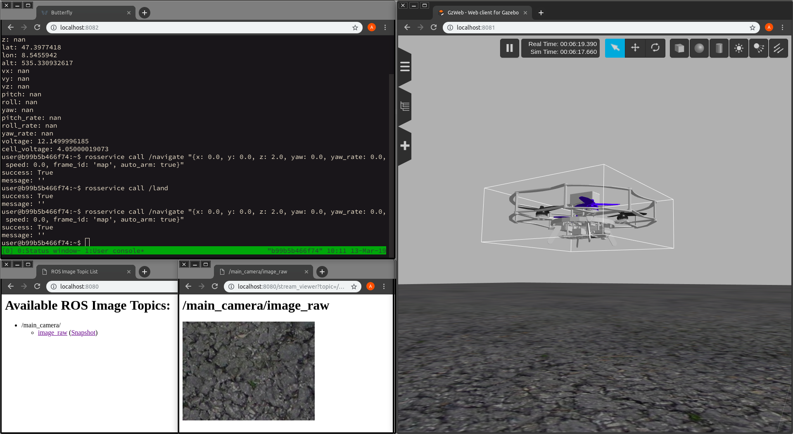
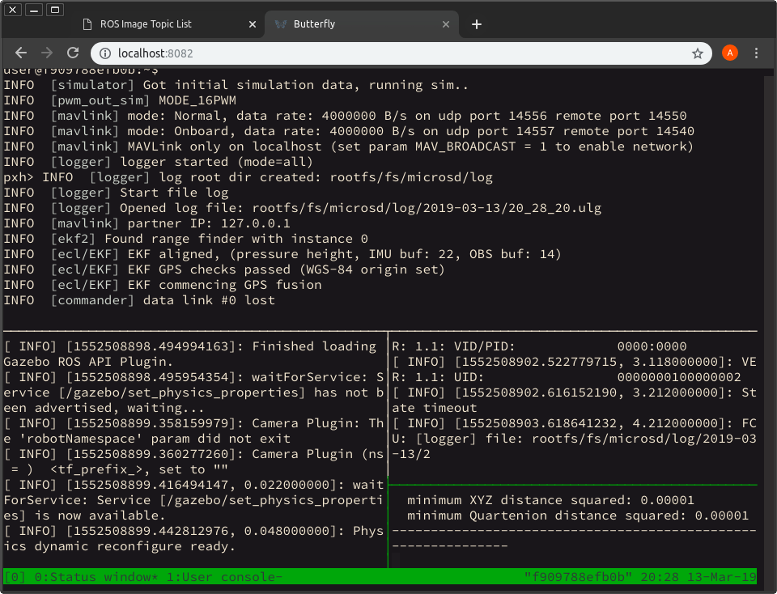

Docker-контейнер с преднастроенным SITL

Для упрощения запуска симулятора предлагается использовать предварительно настроенный Docker-контейнер с симулятором Gazebo, автопилотом PX4 и предустановленными пакетами Клевера.
Состав контейнера
В Docker-контейнере с симулятором установлены и настроены:
- Симулятор Gazebo с плагинами для симуляции камеры, дальномера и связью с ROS
- Пакеты ROS, требуемые для запуска нод Клевера
- Собранный для симулятора PX4
- Легковесный web-интерфейс для Gazebo Gzweb
- Web-терминал Butterfly
Предварительная настройка
Запуск контейнера рекомендуется производить на ОС Ubuntu версии не ниже 16.04 с использованием Docker версии не ниже 18.09. Для комфортной работы с симулятором следует использовать компьютер с не менее чем 4 ядрами CPU (Intel Core i5/i7, не ниже Haswell) и не менее чем 8 ГБ ОЗУ. Работа с симулятором может происходить как на компьютере с запущенным контейнером, так и на другом компьютере в той же локальной сети.
Не забудьте установить и настроить Docker на своей системе!
Запуск симулятора
Для запуска симулятора можно использовать следующую команду:
docker pull sfalexrog/clever-sitl:slim
docker run \
-it \
--rm \
-p 14556:14556 \
-p 14557:14557 \
-p 8080:8080 \
-p 8081:8081 \
-p 57575:57575 \
-p 9090:9090 \
-p 35602:35602 \
-p 2222:22 \
--name clever_sitl \
sfalexrog/clever-sitl:slim
Здесь и далее предполагается, что при настройке Docker на своей системе Вы настроили запуск Docker от обычного пользователя (раздел "Manage Docker as a non-root user")
Первая команда загружает последнюю версию контейнера с симулятором sfalexrog/clever-sitl:slim, вторая его запускает. Ключ -p позволяет задать соответствие между портом компьютера, на котором запущен контейнер, и портом "внутри" контейнера. Порты 14556 и 14557 нужны для подключения к симулятору с помощью QGroundControl, порт 8080 - для просмотра топиков ROS с изображениями и видеопотоками, порт 8081 - для подключения к визуализации симуляции Gazebo, порт 57575 - для доступа к web-терминалу Butterfly.
После запуска контейнера можно перейти по следующим ссылкам в браузере для доступа к сервисам симулятора:
- http://localhost:8080 - просмотр топиков с камеры (аналогично тому, как это сделано в Клевере)
- http://localhost:8081 - визуализация текущего состояния симулятора через Gzweb
- http://localhost:57575 - Web-терминал Butterfly с запущенным сеансом tmux
Доступ к этим сервисам также есть с других компьютеров, расположенных в той же локальной сети; для этого в ссылках, указанных выше, следует localhost поменять на IP-адрес компьютера с запущеным контейнером.
Работа с симулятором
Основное взаимодействие с симулятором происходит через Web-терминал Butterfly. По умолчанию в нём открывается сессия tmux, так что происходящее в терминале можно демонстрировать сразу на нескольких компьютерах.
Можно также создавать дополнительные сеансы средствами Docker. Для этого воспользуйтесь командой
docker exec -it clever_sitl /bin/bash
В web-терминале работают команды ROS, доступны редакторы vim и nano, поддерживается работа с интерпретатором Python. В симуляторе можно запускать программы, написанные для Клевера и не использующие специфический функционал бортового компьютера или периферии (например, LED-ленты).
Визуализация текущего состояния симулированного мира доступна в Gzweb. Камеру можно перемещать, передвигая мышь с зажатой левой кнопкой. Поворот камеры производится при зажатой средней кнопке мыши, приближение/удаление камеры - при повороте колёсика. При выполнении этих манипуляций появляется небольшая жёлтая сфера, означающая центр поворота/приближения.
В web-терминале также можно просмотреть текущее состояние PX4, отладочный вывод нод Клевера, лог Gazebo и Gzweb. Для этого надо переключиться на нулевой экран tmux; это делается комбинацией клавиш ctrl+B и последующим нажатием клавиши 0. Появится примерно следующее:

Верхняя панель - отладочная консоль PX4; на нижней панели: слева находится отладочный вывод симулятора Gazebo, справа сверху - лог нод Клевера, справа снизу - лог Gzweb.
Для переключения между панелями следует использовать комбинацию клавиш ctrl+B и последующее нажатие кнопки Q и номера панели. Номера панелей будут кратковременно выведены поверх самих панелей при нажатии ctrl+B и Q.
Подключение локальных директорий к контейнеру
Для подключения директории, доступной как на основной системе, так и в контейнере, при запуске следует указать ключ -v с указанием директории в основной системе и в контейнере.
Так, для того, чтобы текущая директория стала доступна в контейнере по пути /home/user/data, запустите контейнер со следующими параметрами:
docker run \
-it \
--rm \
-p 14556:14556 \
-p 14557:14557 \
-p 8080:8080 \
-p 8081:8081 \
-p 57575:57575 \
-p 9090:9090 \
-p 35602:35602 \
-p 2222:22 \
-v $(pwd):/home/user/data:rw \
--name clever_sitl \
sfalexrog/clever-sitl:slim
В команде для запуска контейнера ключ
-vможет встречаться многократно. Это позволяет указать несколько общих директорий.
Разумно использовать механизм подключения локальных директорий для добавления своих моделей в симулятор, сохранения и загрузки параметров PX4, а также своих программ для Клевера на Python.
Программы, скомпилированные в контейнере, могут не запускаться на основной системе. Аналогично, программы, скомпилированные на основной системе, могут не запускаться в контейнере. Это следует учитывать при написании нод, использующих компилируемые языки.
Завершение работы с симулятором
Для завершения работы с симулятором достаточно завершить работу соответствующего контейнера. Это можно сделать с помощью инструментов управления Docker-контейнерами или нажатием комбинации клавиш ctrl+C в терминале, в котором был запущен контейнер.
Увеличение скорости работы симулятора
Предложенный в этом режиме метод является экспериментальным; вполне возможно, что он не заработает, и в этом случае некоторые элементы симулятора также перестанут работать
По умолчанию симулятор будет создавать изображения в симулируемых камерах, используя программную растеризацию. Это создаёт повышенную нагрузку на CPU компьютера с запущенным симулятором, а также не позволяет получить приемлемую частоту кадров для большинства задач компьютерного зрения. Как правило, Docker не используют для графически интенсивных задач, поэтому возможности по увеличению производительности ограничены.
При использовании достаточно современного графического оборудования с открытыми драйверами (например, Intel HD Graphics 520+ и mesa на Linux) можно попробовать "пробросить" сеанс X Server и видеокарту в контейнер; в этом случае будет использована гораздо более быстрая аппаратная растеризация.
Для проброса видеокарты в контейнер следует выполнить следующие команды на компьютере, на котором будет запущен контейнер:
touch /tmp/.docker.xauth
xauth nlist $DISPLAY | sed -e 's/^..../ffff/' | xauth -f /tmp/.docker.xauth nmerge -
docker run \
-it \
--rm \
-v /tmp/.X11-unix:/tmp/.X11-unix:rw \
-v /tmp/.docker.xauth:/tmp/.docker.xauth:rw \
-e DISPLAY=$DISPLAY \
-e XAUTHORITY=/tmp/.docker.xauth \
--device /dev/dri/card0:/dev/dri/card0 \
-p 14556:14556 \
-p 14557:14557 \
-p 8080:8080 \
-p 8081:8081 \
-p 57575:57575 \
-p 9090:9090 \
-p 35602:35602 \
-p 2222:22 \
sfalexrog/clever-sitl:slim
При этом на компьютере с контейнером должна быть запущена графическая среда, использующая X Server.